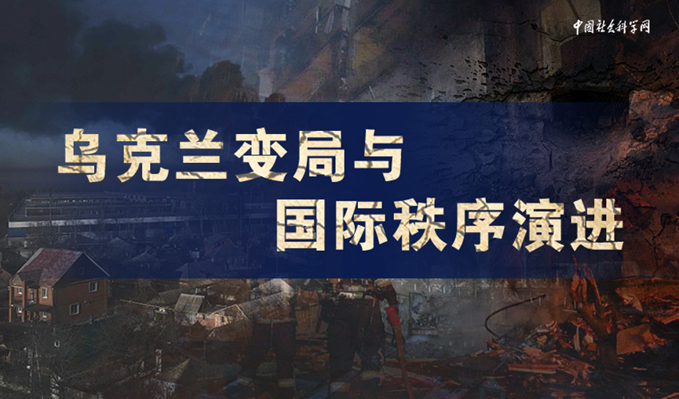
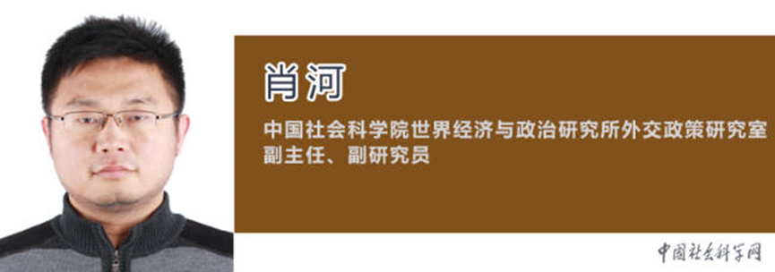
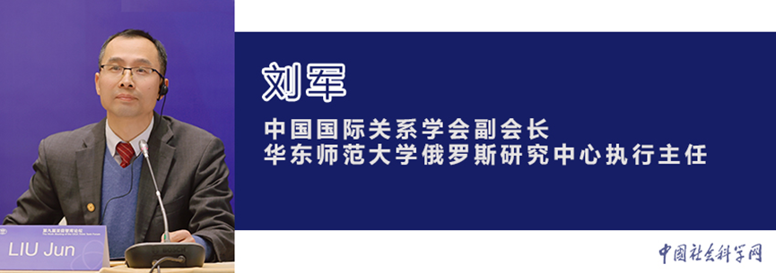
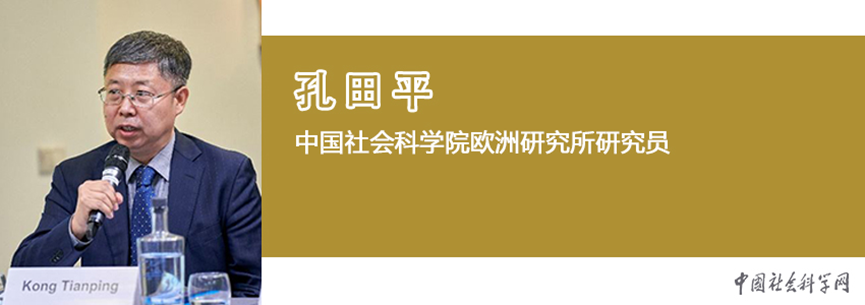
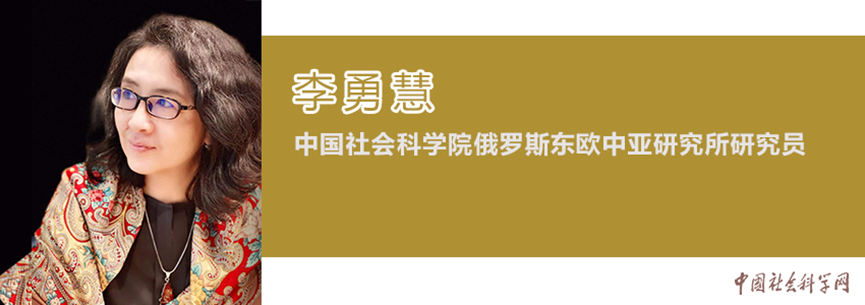

收录于合集


俄乌冲突无疑将对未来的国际格局产生巨大的作用力。但是这个作用力施加的方向是什么？其效果又如何？未来的世界局势将因这场冲突产生何种变化，学者们应中国社会科学网之邀约各抒己见，进行了深入地分析和探讨。 （详细原文请点击左下角“ 阅读原文 ”查看）
场内秩序的破坏与重建：乌克兰问题审思
在麦金德的地缘政治版图中，谁控制了东欧“心脏地带”谁将控制世界。曾经的苏联也正是通过对东欧的控制建立了与霸权美国相抗衡的两极格局。苏联的解体从欧亚机体上掏空了这颗“心脏”，使欧亚大陆的中心形成了权力的真空。从此，美俄基于对彼此安全边界的确立，在这片区域开始了长达30年的争夺。俄罗斯需要战略缓冲带来减轻自己来自西部的安全压力，而美国则通过北约的历次东扩将曾经苏联的势力范围纳入自己的战略空间，一步步挤压俄罗斯的战略空间，从而加剧了俄罗斯的安全焦虑。
俄乌冲突导致推进全球治理难度进一步增大
欧洲地区依然是国际秩序博弈的焦点地区，是未来相当长一段时间全球地缘政治大变局的中心。正是由美国主导“北约”20多年来的不断东扩，让俄罗斯担忧自身安全，近期美国的战争渲染更加剧了地区不稳定性。乌克兰在北约鼓噪下，执意要摆脱俄罗斯影响加入北约阵营，进一步催生了俄罗斯的安全恐惧，乌克兰成为当前局势的最大受害者。这既是俄罗斯安全诉求在冷战结束后长期被漠视的不满总爆发，也是美国对俄外交最大的战略错误所致。

乌克兰危机后的国际秩序发展道路
国际社会尤其需要理解中国所倡导的人类命运共同体理念和人类共同价值观，用“和而不同”的有机团结思维代替“选边站队”的机械团结思维，共同发展出一套符合21世纪要求的新型多极化世界秩序，走出一条人类历史上的新路。从各国在乌克兰危机中的表现来看，未来的国际秩序会向何种方向发展，在一定程度上将取决于中国以何种心态面对百年未有之大变局，又以何种力度和方式来有效践行和推广进步的国际安全理念。能否将国际秩序引领至正确的发展道路是时代给予中国的严肃考验和重大使命。
俄罗斯与乌克兰的武装冲突是近年来最引人关注的国际政治事件之一。在全球新冠疫情大流行、世界经济复苏乏力的大背景下，俄乌冲突为本已经扑朔迷离的世界大变局又增加了更多不确定性。冷静地审视和理性的思考，才能更好地应对这场冲突带来的各种变量。

俄乌冲突背后的深层次动因及其影响
俄乌冲突是2014年乌克兰危机以来俄乌双边关系矛盾发展并恶化的集中体现。2014年乌克兰危机开启了俄罗斯与乌克兰双边关系恶化的进程，尤其是克里米亚全民公投并入俄罗斯之后使得两国关系长期处于敌对状态，再加上乌东地区的分离倾向以及俄罗斯对乌东两个“共和国”的支持，加深了俄乌边境军事对抗局面，这些都是今日俄乌冲突爆发的前奏与预演。俄乌矛盾的核心在于：第一，乌克兰的北约成员国地位问题。第二，克里米亚的领土纠纷及乌东地区的独立问题。第三，俄罗斯的安全诉求问题。
俄乌冲突深度影响俄罗斯与西方关系
纵观冷战结束的30年，美俄关系是大国关系中最为敏感和脆弱的一环。2月24日上午，俄罗斯对乌克兰宣战，引发了欧洲冷战后数十年来最严重的安全危机。这次危机不仅是俄罗斯与乌克兰关系的重大危机，也是俄罗斯与西方关系的严重危机，标志着莫斯科改变了与西方打交道的方式，从过去的对话改为现在的斗争。冷战后俄罗斯与西方竞争与合作的关系已经结束，积累了多重的结构性矛盾，双方关系在短期内难以调和。
俄乌冲突凸显欧洲之无奈
欧盟尽管表现得雄心勃勃，却缺乏将理想转化为现实的能力。欧盟的“全球门户”倡议提出后，饱受资源投入不足质疑的困扰，而“印太合作战略”也被质疑是将欧盟的主要精力和资源用错了地方。有欧洲学者就指出，欧洲的“后院”不在印太，而是在周边国家和地区，欧洲更应当关注这些地区。而就“欧洲军”来说，且不论这支规模不大的军队尚停留在纸面上，即使最后建设成军也难以取代北约的地位，更无力应对俄乌冲突这样规模的危机。尽管法德等国不愿意过分依赖美国，但短期内无法改变以北约为主导的欧洲安全框架。
乌克兰早已成为西方挤压俄罗斯的工具
乌克兰最近的事态发展会在欧洲安全领域产生更长期的战略影响。事实上，西方国家早就放弃了在欧洲大西洋地区建立一个统一的安全体系的想法。2021年6月在马德里举行的欧盟首脑会议宣布各国可以与北大西洋联盟加快强化自身安全的进程，这意味着持续了20年的北约- 俄罗斯理事会框架下的“聋人对话”落幕。尽管许多西方领导人的言论仍然表示没有俄罗斯就不能建立欧洲安全，但实际上北约一直致力于确保对莫斯科的遏制成为该组织存在的主要目标和巩固自身地位的主要理由。
俄乌关系在几百年来可谓剪不断理还乱。俄罗斯和乌克兰这两个渊源颇深的兄弟民族为何在今天彼此针锋相对甚至于兵戎相见？从历史的视角来梳理今日的局势，是回答这个问题的必要方法。

俄乌冲突的历史渊源
俄罗斯与乌克兰具有共同的复杂的历史，随着苏联的解体，俄罗斯和乌克兰成为独立国家。出于国家构建的需要，俄罗斯与乌克兰致力于重塑其民族身份和历史叙事，俄乌关系跌宕起伏，渐行渐远。俄罗斯与乌克兰围绕民族身份和历史叙事的冲突再起。俄罗斯作家索尔仁尼琴曾撰文《重建俄罗斯：反思与初步建言》，宣称“将乌克兰视为一个从大约九世纪起就存在，并拥有其自身非俄罗斯语言的民族，所有这样的说辞都是近来发明的谎言”。
俄乌冲突背后的历史经纬与大国博弈
从历史的角度来看，俄罗斯、乌克兰、白俄罗斯同根同源，都是东斯拉夫人的后裔，而乌克兰首都基辅，则是东斯拉夫人文明中心。俄罗斯与乌克兰在历史发展中曾有矛盾，也曾密切合作。从传统来看，乌克兰作为一个国家，版图几经改变，几乎从未实现过长治久安。苏联解体后，在国家建构方面，乌克兰遇到了问题：东部亲俄派众多，也多主张推行俄语教育，坚持东正教信仰，而乌克兰西部更加亲西方，倾向欧式生活与教育，且深受天主教的影响，割裂的认同感使得国家无法团结一致。

俄乌冲突的缘起及影响
本轮乌克兰危机从2021年开始逐渐升温至今，伴随着各方激烈的信息战、舆论战和心理战经历了俄美谈判，俄罗斯承认乌东两个“共和国”独立，到俄乌军事冲突三个阶段，现在彻底将欧洲国家裹挟到战争的风口。此次俄乌军事冲突可谓是冰冻三尺非一日之寒。事实上自2013年底爆发乌克兰危机后，2014年克里米亚并入俄罗斯后，乌克兰危机不断升级，俄罗斯和乌克兰之间的摩擦就从未间断，军事上的强硬政策也一直存在。亲俄的乌克兰东部地区独立力量也不断壮大，并且采取了更多武力方式。
（责编：张赛）